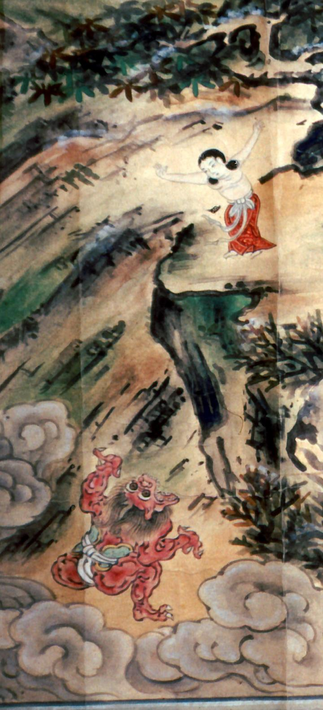

← 图鉴索引

崖下の赤鬼。ふんどし姿である。飛び降りでくる童子を待ち構え、喰らおうとしている。
出典：親書誌：A80_prague_0018：和様仏伝図；ワヨウブツデンズ／日付：2011／資源識別子：A80_prague_0018_0001_0000
Copyright (c)2010- International Research Center for Japanese Studies, Kyoto, Japan. All rights reserved.